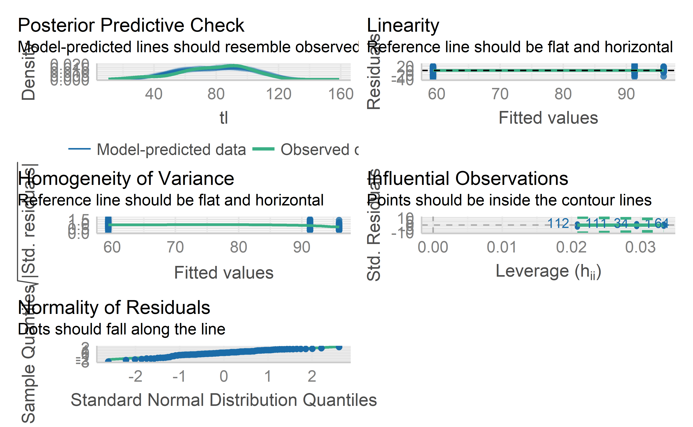
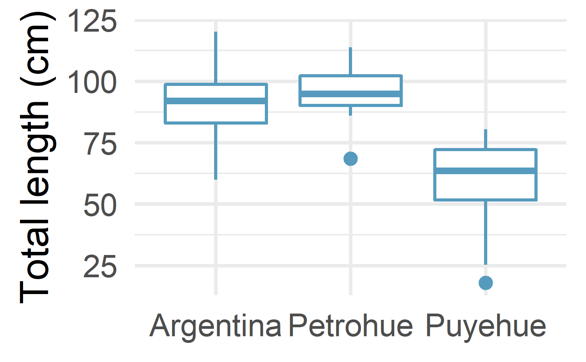
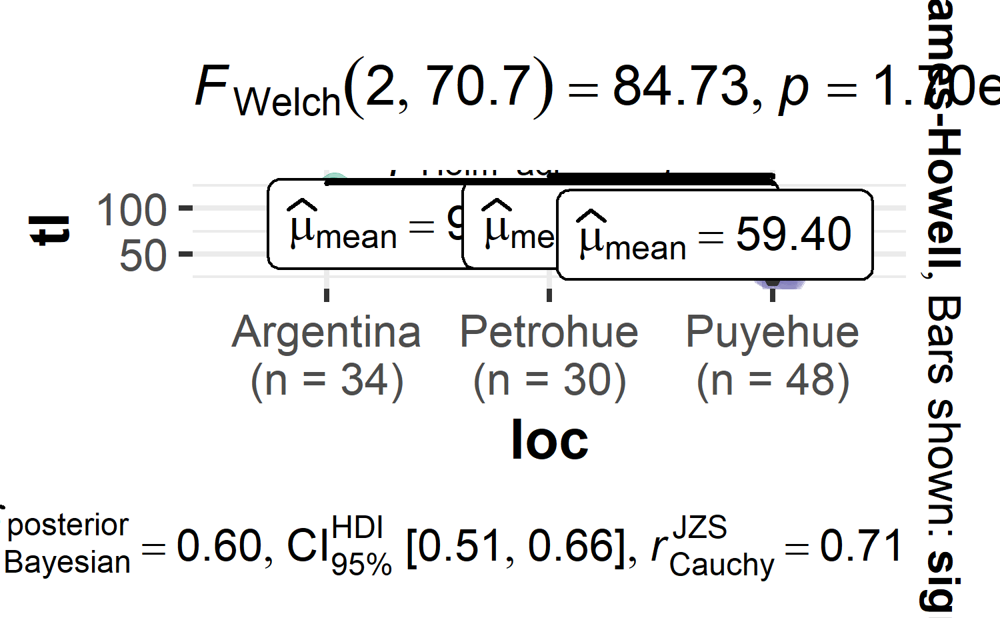
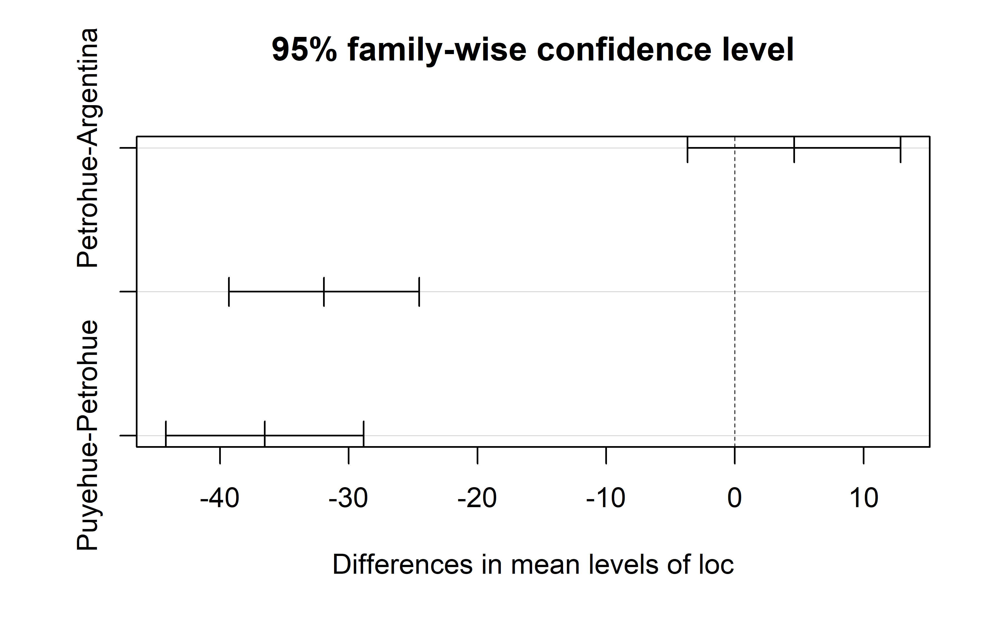
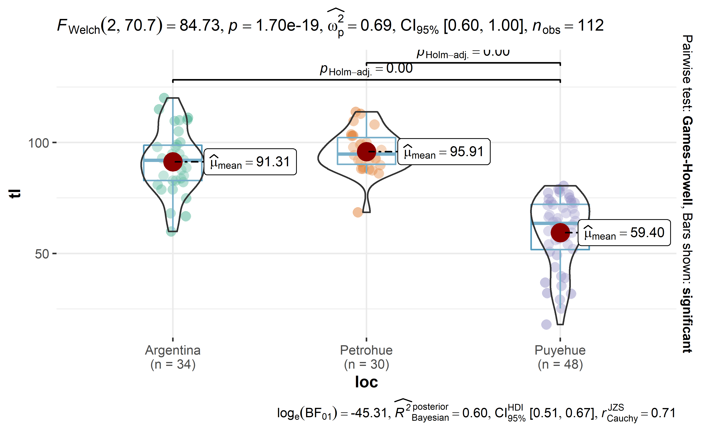

16 Analysis of Variance (ANOVA)
16.1 Introduction
ANOVA (ANalysis Of VAriance) is a statistical test to determine whether two or more population means are different. In other words, it is used to compare two or more groups to see if they are significantly different.
In practice, however, the:
Student t-test is used to compare 2 groups;
ANOVA generalizes the t-test beyond 2 groups, so it is used to compare 3 or more groups.
Note that there are several versions of the ANOVA (e.g., one-way ANOVA, two-way ANOVA, mixed ANOVA, repeated measures ANOVA, etc.). In this chapter, we learn the simplest form—the one-way ANOVA.
Although ANOVA is used to make inference about means of different groups, the method is called analysis of variance because it compares the between variance (the variance between the different groups) and the variance within (the variance within each group). If the between variance is significantly larger than the within variance, the group means are declared to be different. Otherwise, we cannot conclude one way or the other. The two variances are compared to each other by taking the ratio \((\frac{variance_{between}}{variance_{within}})\) and then by comparing this ratio to a threshold from the Fisher (a threshold based on a specific significance level, usually 5%).
This is enough theory regarding the ANOVA method for now. In the remaining of this chapter, we discuss about it from a more practical point of view, and in particular we will cover the following points:
- the aim of the ANOVA, when it should be used and the null/alternative hypothesis
- the underlying assumptions of the ANOVA and how to check them
- how to perform the ANOVA in R
- how to interpret results of the ANOVA
- understand the notion of post-hoc test and interpret the results
- how to visualize results of ANOVA and post-hoc tests
16.2 Aim and hypotheses of ANOVA
As mentioned in the introduction, the ANOVA is used to compare groups (in practice, 3 or more groups). More generally, it is used to:
study whether measurements are similar across different modalities (also called levels or treatments in the context of ANOVA) of a categorical variable
compare the impact of the different levels of a categorical variable on a quantitative variable
explain a quantitative variable based on a qualitative variable
In the context of our example, we are going to use the Kruskal-Wallis test to help us answer the following question: Is the total length of the chinook different between the three locations?.
The null and alternative hypotheses of the Kruskal-Wallis test are:
H0H0: The total length of chinook are equal for the chinook sampled at three locations
H1H1: The total length of chinook are not equal for the chinook sampled at three locations
16.3 Assumptions of ANOVA
As for many statistical tests, there are some assumptions that need to be met in order to be able to interpret the results. When one or several assumptions are not met, although it is technically possible to perform these tests, it would be incorrect to interpret the results and trust the conclusions.
Below are the assumptions of the ANOVA, how to test them and which other tests exist if an assumption is not met:
Variable type: ANOVA requires a mix of one continuous quantitative dependent variable (which corresponds to the measurements to which the question relates) and one qualitative independent variable (with at least 2 levels which will determine the groups to compare).
Independence: the data, collected from a representative and randomly selected portion of the total population, should be independent between groups and within each group. The assumption of independence is most often verified based on the design of the experiment and on the good control of experimental conditions rather than via a formal test. If you are still unsure about independence based on the experiment design, ask yourself if one observation is related to another (if one observation has an impact on another) within each group or between the groups themselves. If not, it is most likely that you have independent samples. If observations between samples (forming the different groups to be compared) are dependent (for example, if three measurements have been collected on the same individuals as it is often the case in medical studies when measuring a metric (i) before, (ii) during and (iii) after a treatment), the repeated measures ANOVA should be preferred in order to take into account the dependency between the samples.
Normality:
In case of small samples, residuals2 should follow approximately a normal distribution. The normality assumption can be tested visually thanks to a histogram and a QQ-plot, and/or formally via a normality test such as the Shapiro-Wilk or Kolmogorov-Smirnov test. If, even after a transformation of your data (e.g., logarithmic transformation, square root, Box-Cox, etc.), the residuals still do not follow approximately a normal distribution, the Kruskal-Wallis test can be applied (kruskal.test(variable ~ group, data = dat in R). This non-parametric test, robust to non normal distributions, has the same goal than the ANOVA—compare 3 or more groups—but it uses sample medians instead of sample means to compare groups.
In case of large samples, normality is not required (this is a common misconception!). By the central limit theorem, sample means of large samples are often well-approximated by a normal distribution even if the data are not normally distributed (Stevens 2013).3 It is therefore not required to test the normality assumption when the number of observations in each group/sample is large (usually n≥30n≥30).
Equality of variances: the variances of the different groups should be equal in the populations (an assumption called homogeneity of the variances, or even sometimes referred as homoscedasticity, as opposed to heteroscedasticity if variances are different across groups). This assumption can be tested graphically (by comparing the dispersion in a boxplot or dotplot for instance), or more formally via the Levene’s test (
leveneTest(variable ~ group)from the{car}package) or Bartlett’s test, among others. If the hypothesis of equal variances is rejected, another version of the ANOVA can be used: the Welch ANOVA (oneway.test(variable ~ group, var.equal = FALSE)). Note that the Welch ANOVA does not require homogeneity of the variances, but the distributions should still follow approximately a normal distribution. Note that the Kruskal-Wallis test does not require the assumptions of normality nor homoscedasticity of the variances.4Outliers: An outlier is a value or an observation that is distant from the other observations. There should be no significant outliers in the different groups, or the conclusions of your ANOVA may be flawed. There are several methods to detect outliers in your data but in order to deal with them, it is your choice to either:
use the non-parametric version (i.e., the Kruskal-Wallis test)
transform your data (logarithmic or Box-Cox transformation, among others)
or remove them (be careful)
Choosing the appropriate test depending on whether assumptions are met may be confusing so here is a brief summary:
Check that your observations are independent.
Sample sizes:
In case of small samples, test the normality of residuals: - If normality is assumed, test the homogeneity of the variances:
- If variances are equal, use **ANOVA**. - If variances are not equal, use the **Welch ANOVA**. - If normality is not assumed, use the **Kruskal-Wallis test**.In case of large samples normality is assumed, so test the homogeneity of the variances:
If variances are equal, use ANOVA.
If variances are not equal, use the Welch ANOVA.
Now that we have seen the underlying assumptions of the ANOVA, we review them specifically for our dataset before applying the appropriate version of the test.
Normality
Since the smallest sample size per group (i.e., per species) is 68, we have large samples. Therefore, we do not need to check normality. Normally, we would directly test the homogeneity of the variances without testing normality. However, for the sake of illustration, we act as if the sample sizes were small in order to illustrate what would need to be done in that case.
Remember that normality of residuals can be tested visually via a histogram and a QQ-plot, and/or formally via a normality test (Shapiro-Wilk test for instance).
Before checking the normality assumption, we first need to compute the ANOVA (more on that in this section). We then save the results in res_aov :
In R, we can test normality of the residuals with the Shapiro-Wilk test thanks to the shapiro.test() function:
#>
#> Shapiro-Wilk normality test
#>
#> data: tl
#> W = 1, p-value = 0.01P-value of the Shapiro-Wilk test on the residuals is larger than the usual significance level of α=5%α=5%, so we do not reject the hypothesis that residuals follow a normal distribution (p-value = 0.01).
We showed that all assumptions of the ANOVA are met. We can thus proceed to the implementation of the ANOVA in R, but first, let’s do some preliminary analyses to better understand the research question.
16.4 Data
The data we are going to use is chinookdataset, which found in FSA package. This dataset is a dataframe with 112 observations of lengths and weights for Chinook Salmon from three locations in Argentina.
#> Rows: 112
#> Columns: 3
#> $ tl <dbl> 120.1, 115.0, 111.2, 110.2, 110.0, 109.7, 105.0, 100.1, 98.0, 92.1~
#> $ w <dbl> 17.9, 17.2, 16.8, 15.8, 14.3, 13.8, 12.8, 11.7, 12.8, 14.8, 9.7, 7~
#> $ loc <fct> Argentina, Argentina, Argentina, Argentina, Argentina, Argentina, ~As an advice, it always recommended that we should visualize the data and understandt the overying patterns before performing the ANOVA test in R. The best way to do so is to draw and compare boxplots of the quantitative variable total length for each location.

The boxplots above show that total length sampled from Puyehue has the lowest median values compared to other locations. Besides a boxplot for each location, it is also a good practice to compute some descriptive statistics such as the mean and standard deviation by location. This can be done, for instance group_by() functions from the dplyr package and get_summary_stats from ggpubr package:
#> # A tibble: 3 x 10
#> loc n min max median iqr mean sd se ci
#> <fct> <dbl> <dbl> <dbl> <dbl> <dbl> <dbl> <dbl> <dbl> <dbl>
#> 1 Argentina 34 59.9 120. 92.0 15.8 91.3 14.0 2.40 4.88
#> 2 Petrohue 30 68.5 114. 94.8 12.1 95.9 9.24 1.69 3.45
#> 3 Puyehue 48 18 80.5 63.6 20.4 59.4 16.0 2.31 4.66Mean is also the lowest for for chinook sample collected at Puyehue and highest for for Petrohue. Boxplots and descriptive statistics are, however, not enough to conclude that total length of chinook salmon from the three locations are significantly different.
ANOVA in R
As you guessed by now, only the ANOVA can help us to make inference about the population given the sample at hand, and help us to answer the initial research question Is the total length of chinook salmon vary between the three sampled locations?
Several approach are used to compute ANOVA in R. We learn two of them: One popular function is oneway.test
#>
#> One-way analysis of means
#>
#> data: tl and loc
#> F = 83, num df = 2, denom df = 109, p-value <2e-16The second approach is by simply combine aov with summary functions
#> Df Sum Sq Mean Sq F value Pr(>F)
#> loc 2 32172 16086 83.4 <2e-16 ***
#> Residuals 109 21028 193
#> ---
#> Signif. codes: 0 '***' 0.001 '**' 0.01 '*' 0.05 '.' 0.1 ' ' 1The output result of the two approaches provide similar test statistic (F-value ) and the p-value (p-value in the first method and Pr(>F) in the second one) are exactly the same for both methods, which means that in case of equal variances, results and conclusions will be unchanged.
While oneway.test provide access to switch from the ANOVA (used when variances are equal) to the Welch ANOVA (used when variances are unequal) by simpliying parsing var.equal = FALSE, the approach does not provide ANOVA table as output. In contrast, aov approach provides:
- the full ANOVA table (with degrees of freedom, mean squares, etc.) is printed, which may be of interest in some (theoritical) cases
- results of the ANOVA are used later for
post-hoctests
16.5 how to interpret ANOVA table
Given that the p-value is smaller than 0.05, we reject the null hypothesis, so we reject the hypothesis that all means are equal. Therefore, we can conclude that the total length of chinook salmon vary among locations (p-value < 0.05). A report package has a report function which has ability to intepret results from aov
#> The ANOVA (formula: tl ~ loc) suggests that:
#>
#> - The main effect of loc is statistically significant and large (F(2, 109) =
#> 83.38, p < .001; Eta2 = 0.60, 95% CI [0.51, 1.00])
#>
#> Effect sizes were labelled following Field's (2013) recommendations.statistical rich plots are becoming popular and ggstatsplot packages in R offers that ability. For instance, we learn how to use ggbetweenstats function from within the ggstatsplot package to compute ANOVA in R by simply parsing an argument type = "parametric":

16.6 Post-hoc
When comparing the means for the levels of a factor in an analysis of variance, a simple comparison using t-tests will inflate the probability of declaring a significant difference when it is not in fact present. This because the intervals are calculated with a given coverage probability for each interval but the interpretation of the coverage is usually with respect to the entire family of intervals.
John Tukey introduced intervals based on the range of the sample means rather than the individual differences. The intervals returned by this function are based on this Studentized range statistics. In R the post-hoc analysis of ANOVA can be accomplished with TukeyHSD function as;
#> Tukey multiple comparisons of means
#> 95% family-wise confidence level
#>
#> Fit: aov(formula = tl ~ loc)
#>
#> $loc
#> diff lwr upr p adj
#> Petrohue-Argentina 4.6 -3.67 12.9 0.386
#> Puyehue-Argentina -31.9 -39.31 -24.5 0.000
#> Puyehue-Petrohue -36.5 -44.19 -28.8 0.000The results can also be visualized with the plot() function:

R has pairwise.t.test function that also help us to assess which group in anova are significant different from the rest
#>
#> Pairwise comparisons using t tests with pooled SD
#>
#> data: tl and loc
#>
#> Argentina Petrohue
#> Petrohue 0.2 -
#> Puyehue <2e-16 <2e-16
#>
#> P value adjustment method: holmThere are times when one need to include ANOVA and post-hoc tests result on the same plot. This is easily achieved using ggstatsplot package and then parsing an argument pairwise.comparisons = TRUE as the code highlight below;
